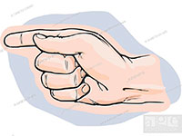

AS SUAS ESPECIFICAÇOES
Clique sobre as areas destacadas a vermelho

tela
O que é Planta Baixa?
[AQUI ENTRA UMA FOTO]
A planta baixa é um desenho técnico que representa um corte a um metro e meio a partir da base da casa ou edifício, ele é feito em uma determinada escala com as medidas reais do imóvel. Imagine que passou uma serra elétrica cortando a casa exatamente a 1,5 m do piso e você está olhando para esse corte de cima, então verá as paredes cortadas, portas, janelas, vãos e pilares cortados e também vai ver o desenho do piso, móveis e outros detalhes da casa.Tudo o que é cortado por essa lâmina imaginária é representado com uma espessura de linha mais forte, existe uma hierarquia entre as espessuras de linhas e tipos de linhas que são utilizados em um projeto arquitetônico.
Baixa
O que é planta baixa humanizada?
[AQUI ENTRA UMA FOTO]
A planta humanizada é aquela que vem com a representação dos móveis e revestimentos de piso desenhados e coloridos, se for uma planta de casa pode também ter o jardim desenhado.É uma planta feita para o leigo entender com mais facilidade, é diferente da planta técnica que basicamente é composta por linhas, as plantas baixas humanizadas são mais comerciais, são usadas pelos arquitetos e empresas para explicar melhor o projeto para os clientes.Não é a mesma planta que vai para a obra, as plantas, cortes e elevações que vão para a execução de obra são técnicas, com detalhamentos que são difíceis para o leigo compreender.Aproveitando que entramos no assunto vamos falar sobre as fases de projeto, sobre os tipos de plantas, cortes e elevações.
Arquitetônico
Projeto Arquitetônico
[AQUI ENTRA UMA FOTO]
Agora que você já sabe o que é uma planta baixa, basicamente uma planta térrea de uma casa ou um edifício deve imaginar que não só de plantas baixas se faz um projeto arquitetônico, para se construir uma casa ou outra edificação qualquer é preciso entender todas as dimensões e planos.Nós arquitetos temos que visualizar e projetar a casa nas nossas mentes em três dimensões (3D) e colocar nossas ideias em um papel de apenas duas dimensões, que mais tarde vai ser construído e se transformar fisicamente em uma casa que irá ter não somente três dimensões (altura, comprimento e largura), como terá um valor sentimental, sensorial, funcional e estético.
Para representar os projetos arquitetônicos se utilizam desenhos gráficos de plantas, cortes, elevações, perspectivas e detalhamentos.
Se uma casa, por exemplo, tem dois andares, sem subsolo, ela terá ao menos: planta térrea, planta do primeiro pavimento, planta de cobertura, implantação, as elevações de todas as suas fachadas e alguns cortes.
Planta: As plantas são feitas geralmente a 1,5 m do piso, nos projetos se utilizam linhas tracejadas para marcar os eixos do projeto, assim fica mais fácil relacionar cada seção, eixos verticais e horizontais.Além dos eixos, nas plantas arquitetônicas existem indicações de cortes, com uma seta indicando o lado do corte e o nome do corte, isso serve para relacionar nas plantas o que vai ser visualizado no corte.Como dito as plantas não deixam também de ser um corte no sentido horizontal, mas chamamos de corte a seção vertical.
Existem vários tipos de plantas:
Planta baixa ou planta do pavimento térreo: Que é a planta de acesso da residência, mais próxima do nível da rua.
Planta de subsolo: Que são plantas que ficam abaixo do nível da rua, podendo ter vários andares de subsolo, como em um shopping, em casas é comum ter apenas um nível de subsolo que geralmente abriga a garagem.
Planta de mezanino: Que são plantas que não chegam a ser consideradas pavimento, como por exemplo, plantas de sótãos ou mezaninos de lojas comerciais com menos de 1/3 da área total da loja, que são áreas não computáveis.
Planta dos demais pavimentos: Que são todas as plantas dos demais andares, 1º, 2º, 3º, etc.
Planta de cobertura: São as plantas que mostram a vista de cima da edificação, qual a inclinação e para que lado caem as águas de um telhado, onde ficam as calhas, os ralos de captação da água das chuvas, se a cobertura é de laje, é de telhado, qual é o tipo de impermeabilização, sombreamento e quais são as cotas da cobertura.
Sempre o que estiver mais forte no desenho é o que esta mais alto, “mais perto do observador” e o que estiver mais claro, com linhas finas e claras é o que está próximo ao nível do térreo.
Implantação: A implantação também é chamada de planta de situação e mostra todo o terreno e o seu entorno imediato (ruas, calçadas, árvores, jardim, etc.) e também com a planta de cobertura em uma escala menor.
A implantação é importante para identificar os acessos dos veículos, pedestres, níveis do terreno, rebaixamento das guias, acesso elétrico, hidráulico e sanitário, vegetação existente, orientação solar, ventos dominantes, limites do lote, etc.A primeira coisa que se analisa ao dar início a um projeto arquitetônico é a implantação, quais as determinantes do lote, qual a orientação solar e direção dos ventos para projetar as melhores soluções de fachadas e setorização dos ambientes. Assim como a análise das curvas de nível, afastamentos laterais, recuos obrigatórios e todas as condicionantes são analisadas junto à planta de situação para se determinar onde será implantada a residênciaSe as plantas representam o projeto horizontalmente, as elevações e cortes representam o projeto verticalmente.As elevações são os desenhos das fachadas do edifício, de todas as suas faces, as elevações podem também ser chamadas de vistas, pois não são sessões, cortes, como as plantas e os cortes, são apenas vistas que indicam como é a fachada, quais os revestimentos, quais as aberturas (portas e janelas), o que está mais próximo e o que está mais afastadoJá os cortes são seções verticais, novamente imagine que passou uma serra elétrica e cortou, digamos, uma casa verticalmente do telhado até o subsolo. Nos cortes se determinam as alturas das portas, janelas, escadas, vigas, pé-direito, forro, laje, etc.Além dessas representações técnicas com os detalhamentos, áreas, nomes dos ambientes, etc. as perspectivas internas e externas, servem para ilustrar o projeto ao cliente que irá visualizar como ficará o projeto acabado.Essas perspectivas podem ser croquis, maquetes eletrônicas e até maquetes físicas.
Fases do Projeto Arquitetônico
Tem gente que acredita que o projeto arquitetônico nasce que nem mágica, que é só desenhar e a casa pode começar a ser construída, se fosse assim arquitetura nãos seria uma graduação de 5 anos, os arquitetos não são contratados para desenhar, são contratados para projetar.
E o que isso significa? Que cada projeto é único, quando você contrata um arquiteto ele vai avaliar as suas necessidades, o que a sua família precisa, como vocês vivem, qual a situação do terreno, o que condiciona o projeto?
Cada terreno tem suas especificações, uns são planos, outros inclinados, largos e estreitos, tem que se avaliar a orientação solar durante os meses do ano, os ventos dominantes no inverno e verão, as legislações urbanas, estaduais e federais, o orçamento e os recursos disponíveis.
Tudo isso vem antes mesmo do projeto começar a ser “desenhado” no papel, primeiro existe uma analise criteriosa para que então o esboço do projeto comece a nascer, pois tudo isso ira determinar a qualidade do projeto, o bom uso e a salubridade da sua casa.
Estudo Preliminar
Com base na etapa de analise os primeiros desenhos surgem no estudo preliminar, quando o arquiteto usa sua criatividade para projetar as melhores soluções de uso do imóvel com a setorização dos ambientes e a relação entre os espaços, nesta fase aqui são entregues: plantas, cortes, elevações e um memorial justificativo, podendo também incluir perspectivas, maquete volumétrica e uma análise de custo.
No estudo preliminar os elementos construtivos são representados de forma esquemática, com os níveis e alguns dimensionamentos principais.
Anteprojeto
Com o projeto mais bem definido junto ao cliente o arquiteto começa a desenvolver o Anteprojeto, onde é definido o partido arquitetônico, os elementos construtivos considerando os projetos complementares. É nesta etapa que o cliente aprova o projeto final e que se da entrada junto do Conselho de Arquitetura e Urbanismo – CAU.
Aqui os projetos são mais bem detalhados, são entregues: implantação, plantas, cortes e elevações, memorial justificativo com os aspectos construtivos, discriminação técnica, documentação para aprovação nos órgãos públicos e uma lista preliminar de materiais.
Pode ser entregue também maquete, perspectivas, estimativa de custo e projetos complementares.
A diferença é que as representações devem estar em escala igual ou superior a 1/100, as medidas, cotas, elementos construtivos, áreas, nomes dos ambientes, eixos, topografia, e orientação solar devem estar claros no Anteprojeto. São plantas com medidas e especificações.
Projeto Legal
A fase do Projeto Legal é a adaptação do Anteprojeto para a aprovação na prefeitura e nos órgãos competentes, neste caso podem ser feitas várias modificações até que o projeto seja devidamente aprovado de acordo com todas as legislações vigentes.
Aqui são especificadas as áreas computáveis, não computáveis, áreas permeáveis, área construída, número de pavimentos e tudo o que a prefeitura irá exigir para liberar o projeto para a construção.
Projeto Executivo
É aqui que o “bicho pega” minha gente, o projeto executivo é o projeto que vai para a obra, não pode ter erros, tem que estar com o máximo de detalhamentos possíveis com informações claras e objetivas dentro das normas técnicas para que todos na obra entendam.
São entregues: implantação, plantas, cortes e elevações, detalhamentos, discriminações técnicas, especificações de execução, lista de materiais e projetos complementares.
Pode ter o quadro de materiais de acabamento, quadro geral das áreas, maquete detalhada e orçamento do projeto.
A escala do projeto executivo tem que ser igual ou superior a escala 1/100 com a representação de todos os detalhes construtivos, medidas, cotas e recomendações para a construção.
Depois do projeto executivo cabe ainda ao arquiteto a elaboração do As Built, ou manual do proprietário que indica como foi construído, os trajetos dos encanamentos hidráulicos, fiações elétricas, posicionamento de pilares, vigas, etc.
Assim você não corre o risco de futuramente furar um cano de água na hora de instalar sua TV, é um manual que conta com todas as plantas, cortes e elevações e todas as alterações feitas no projeto até o momento final da execução.
Esse documento é importante em caso de futuras alterações no projeto e até mesmo para não acertar as tubulações hidráulicas na hora de parafusar ou pregar algo na parede.
Para mais informações sobre as fases de projeto você pode consultar a NBR 6492/1994.
Como Fazer uma Planta Baixa
Para finalizar esse post, que eu espero que tenha sido útil para você eu anexei um vídeo que mostra um estudo preliminar do arquiteto Shahram Azizi, que mostra sua desenvoltura ao projetar um chalé residencial de 30 m².
Esse tipo de representação que você verá no começo do vídeo se usa no Estudo Preliminar, pois é um desenho mais livre, sem medidas detalhadas, apenas uma ideia do que será o projeto, na segunda parte já mostra o projeto em CAD com um modelo em 3D da casa.